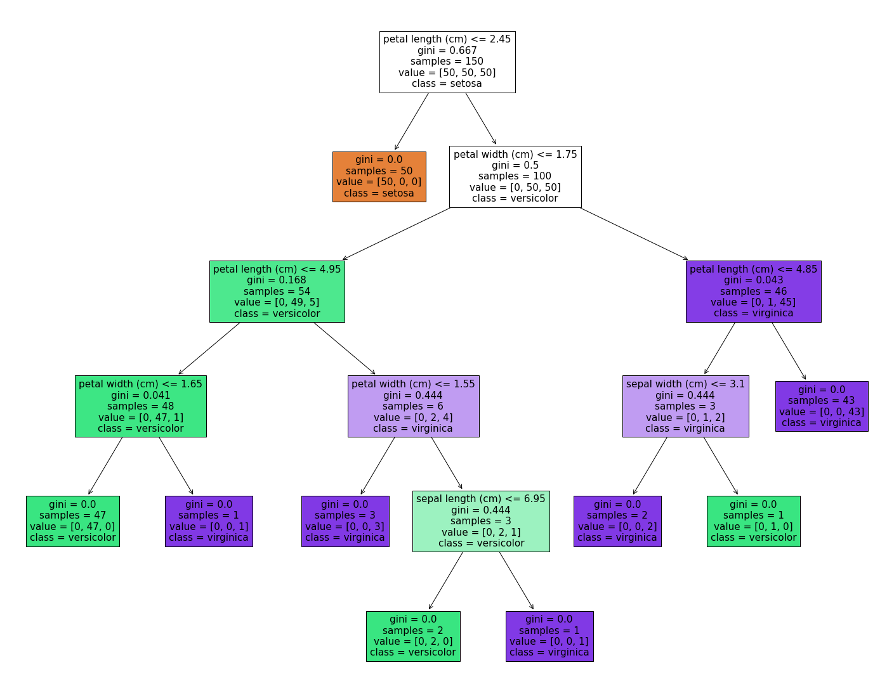
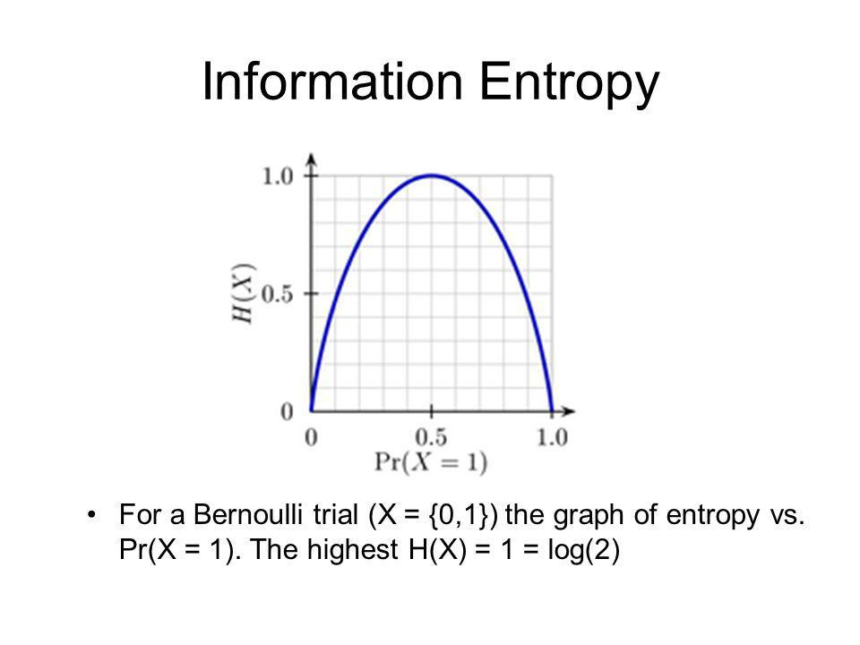
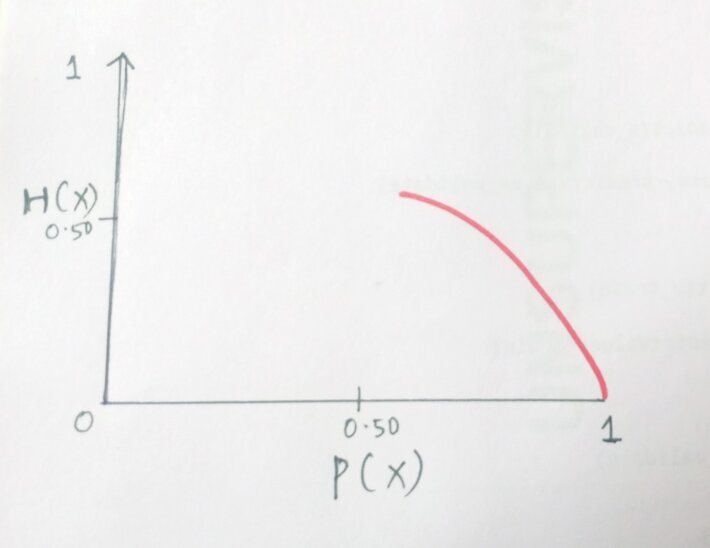
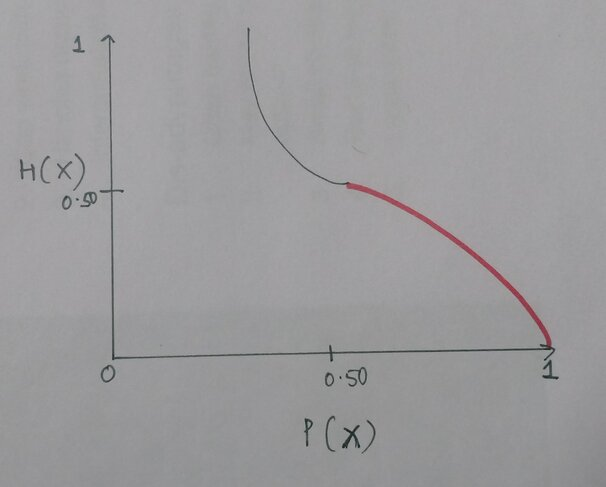
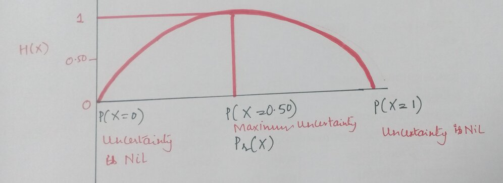
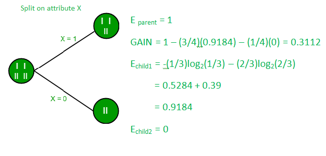

This blog will touch on the topic of entropy and explain in the simplest and basic language of what Information Theory is about and why it is important.
❗ This page largely follows the Analytics Vindya blog on Entropy
The term and idea are employed in a variety of contexts, including the foundations of information theory, the microscopic explanations of nature in statistical physics, and classical thermodynamics, where they were initially discovered.
It is believed to have had a big impact on the development of a lot of disciplines, such physics, chemistry, and biological systems.
Entropy is the number of microscopic configurations or states of individual atoms and molecules inside a system that are consistent with the macroscopic requirements of the system, according to physicist Ludwig Boltzmann.
Similar statistical methods for assessing microscopic uncertainty and multiplicity were developed by Bell Labs scientist Claude Shannon in 1948 to address the issue of random information losses in telecommunication communications.
Information theory initially appeared in Claude E. Shannon's 1958 book A Mathematical Theory of Communication. He created information entropy, a unit of measure for the amount of uncertainty a message eliminates, in an effort to accurately quantify the stochastic nature of lost information in phone-line transfers.
How much surprise and data are there in a variable is measured by entropy. The average degree of uncertainty across all of a random variable's potential outcomes is referred to as entropy in information theory.
The entropy information theory, which also holds for decision trees and other machine learning models, states that events with greater uncertainty have larger entropies. Entropy theory can be used to enhance data storage, decision-making, and communication.
The decision tree, which operates as a hierarchical if-then statement based on feature comparison operators, is a popular supervised learning technique in machine learning.
It is used to identify relationships between prediction and response variables in regression and classification problems. The tree structure's root, branch, and leaf nodes show all outcomes based on specific conditions or rules.
'Homogenous leaf nodes' are what the method aims to create when the output variable contains only records of that kind. Constraints occasionally produce results in the Leaf nodes that are in conflict, though.
In order to produce the best accurate predictions, the algorithm maximizes a loss function when selecting the features and thresholds for the tree. From simple binary categorization to complicated decision-making, decision trees are often utilized for a variety of purposes.
After reviewing these ideas, it appears that entropy has something to do with the conversion of heterogeneity to homogeneity, and the decision tree algorithm is doing just that.

However, a general framework for entropy is not sufficient enough, particularly for decision-making that invariably incorporates uncertainty.
The fact that Shannon's entropy only considers statistical uncertainty limits its applicability to human decision-making, which also contains uncertainty arising from incompleteness, ambiguity, and individualistic attitudes.
The aim of a decision tree is to as much as possible reduce the uncertainty or "impurity" of the target data at the leaf (or end-outcome) nodes.
By further breaking down the tree, the objective function, which in this case is the decision tree algorithm, reduces the data impurity. Entropy and Gini are two metrics used to quantify this impurity.
A Pearson's Chi-Square test is a statistical test for categorical data.
💡Categorical data
1. is divided into groups or categories.
2. is based on qualitative characteristics.
3. has no order in categorical values and variables.
4. can take numerical values, but those numbers don’t have any mathematical meaning.
5. is displayed graphically by bar charts and pie charts.It is employed to ascertain whether your data significantly depart from your expectations. The Pearson's Chi-Square test comes in two varieties:
To determine whether the frequency distribution of a categorical variable deviates from your expectations, apply the Chi-Square goodness of fit test.
When determining whether two categorical variables are connected to one another, the Chi-Square test of independence is utilized.
Chi-Square is often written as and is pronounce "kai-square". This is to run non-parametric tests on categorical data. Categorical variables can be nominal or ordinal and represent groupings such as species or nationalities.
The Chi-Square formula tests use the same formula to calculate the test statistic, Chi-Square ():
where:
Χ^2 is the Chi-Square test statistic
Σ is the summation operator (it means “take the sum of”)
O is the observed frequency
E is the expected frequencyThe test ultimately serves to understand and answer the question of whether the frequencies appeared between two categorical variables actually have connections or follow some pattern by comparing the observed frequencies to the frequencies that we might expect to obtain purely by chance.
In decision trees, again entropy is a measure of impurity used to evaluates the homogeneity of a dataset. It helps determine the best split for building an informative decision tree model.
💡Gain and Entropy
- are related concepts in decision tree algorithms.
- Gain measures the reduction in entropy achieved by splitting a dataset, helping to
identify the best attribute for partitioning the data.Let's imagine that we have a box full of equal quantities of coffee pouches in two flavors: caramel latte and normal cappuccino. You may select either flavor, but only if your eyes are closed.
The situation in which you would have to select is known as the state of maximum uncertainty since your choice may result in outcomes with an equal likelihood. If I had just had caramel latte or cappuccino coffee pouches, the result would have been known, and there would be no uncertainty (or surprise).
The probability of getting each outcome of a caramel latte pouch or cappuccino pouch is:
P(Coffee pouch == Caramel Latte) = 0.50
P(Coffee pouch == Cappuccino) = 1 - 0.50 = 0.50When we have only one result either caramel latte or cappuccino pouch, then in the absence of uncertainty, the probability of the event is:
P(Coffee pouch == Caramel Latte) = 1
P(Coffee pouch == Cappuccino) = 1 - 1 = 0There is a relationship between heterogeneity and uncertainty; the more heterogeneous the event the more uncertainty. On the other hand, the less heterogeneous, or so to say, the more homogeneous the event, the lesser is the uncertainty. The uncertainty is expressed as Gini or Entropy.
Claude E. Shannon had expressed this relationship between the probability and the heterogeneity or impurity in the mathematical form with the help of the following equation:
The uncertainty or the impurity is represented as the log to base 2 of the probability of a category (). The index () refers to the number of possible categories. Here, i = 2 as our problem is a binary classification.
This equation is graphically depicted by a symmetric curve as shown below. On the x-axis is the probability of the event and the y-axis indicates the heterogeneity or the impurity denoted by .

The has a very unique property that is when there are only two outcomes say probability of the event is either 1 or 0.50 then in such scenario takes the following values (ignoring the negative term):
Now, the above values of the probability and are depicted in the following manner:

Entropy in Machine Learning the catch is when the probability, becomes 0, then the value of moves towards infinity and the curve changes its shape to:

The entropy or the impurity measure can only take value from 0 to 1 as the probability ranges from 0 to 1 and hence, we do not want the above situation. So, to make the curve and the value of back to zero, we multiply with the probability i.e. with itself.
Therefore, the expression becomes () and returns a negative value and to remove this negativity effect, we multiply the resultant with a negative sign and the equation finally becomes:
Now, this expression can be used to show how the uncertainty changes depending on the likelihood of an event.
The curve finally becomes and holds the following values:

This scale of entropy from 0 to 1 is for binary classification problems. For a multiple classification problem, the above relationship holds, however, the scale may change.
Calculation of Entropy in Python We shall estimate the entropy for three different scenarios. The event Y is getting a caramel latte coffee pouch. The heterogeneity or the impurity formula for two different classes is as follows:
where,
p_i = Probability of Y = 1 i.e. probability of success of the event
q_i = Probability of Y = 0 i.e. probability of failure of the event| Coffee flavor | Quantity of Pouches | Probability |
|---|---|---|
| Caramel Latte | 7 | 0.7 |
| Cappuccino | 3 | 0.3 |
| Total | 10 | 1 |
This value 0.88129089 is the measurement of uncertainty when given the box full of coffee pouches and asked to pull out one of the pouches when there are seven pouches of caramel latte flavor and three pouches of cappuccino flavor.
| Coffee flavor | Quantity of Pouches | Probability |
|---|---|---|
| Caramel Latte | 5 | 0.5 |
| Cappuccino | 5 | 0.5 |
| Total | 10 | 1 |
| Coffee flavor | Quantity of Pouches | Probability |
|---|---|---|
| Caramel Latte | 10 | 1 |
| Cappuccino | 0 | 0 |
| Total | 10 | 1 |
In scenarios 2 and 3, can see that the entropy is 1 and 0, respectively. In scenario 3, when we have only one flavor of the coffee pouch, caramel latte, and have removed all the pouches of cappuccino flavor, then the uncertainty or the surprise is also completely removed and the aforementioned entropy is zero. We can then conclude that the information is 100% present.
As we have seen above, the cost function for decision trees is to reduce heterogeneity in the leaf nodes. In order to obtain the greatest possible homogeneity—or, to put it another way, the greatest reduction in entropy inside the two tree levels—when the data is split into two, we must identify the attributes and within those attributes the threshold.
The Shannon entropy formula is used to estimate the entropy of the target column at the root level. The entropy calculated for the target column at each branch is the weighted entropy. Taking the weights of each attribute results in the weighted entropy. The probabilities of each class make up the weights. The amount of information gained increases with the amount of entropy decrease.
The pattern in the data is known as information gain, which is also known as entropy reduction. It can alternatively be thought of as the parent node's entropy less the child node's entropy. The formula is 1 - entropy. For the three cases mentioned above, the entropy and information gain are as follows:
| Entropy | Information | Gain |
|---|---|---|
| Case 1 | 0.88129089 | 0.11870911 |
| Case 2 | 1 | 0 |
| Case 3 | 0 | 1 |
We have the following tree with a total of four values at the root node that is split into the first level having one value in one branch (say, Branch 1) and three values in the other branch (Branch 2). The entropy at the root node is 1.
Now, to compute the entropy at the child node 1, the weights are taken as ⅓ for Branch 1 and ⅔ for Branch 2 and are calculated using Shannon’s entropy formula. As we had seen above, the entropy for child node 2 is zero because there is only one value in that child node meaning there is no uncertainty and hence, the heterogeneity is not present.
The information gain for the above tree is the reduction in the weighted average of the entropy.
Information

Entropy evaluates the "impurity or randomness present in a dataset" in machine learning. In decision tree methods, it is frequently used to assess the homogeneity of data at a specific node. A more varied group of data is indicated by a higher entropy score.
Entropy can be used by decision tree models to choose the optimal plots for making knowledgeable judgments and creating precise predictive models.
The amount of surprise (or uncertainty) associated with the value of a random variable or the result of a random process is measured by information entropy, often known as Shannon's entropy. Its importance in the decision tree comes from the fact that it enables us to calculate the heterogeneity or impurity of the target variable. The child nodes are then formed in such a way that their combined entropy must be lower than that of the parent node in order to obtain the highest possible level of homogeneity in the response variable.
Topic 0: Information Theory
Topic 1: Math and Physics